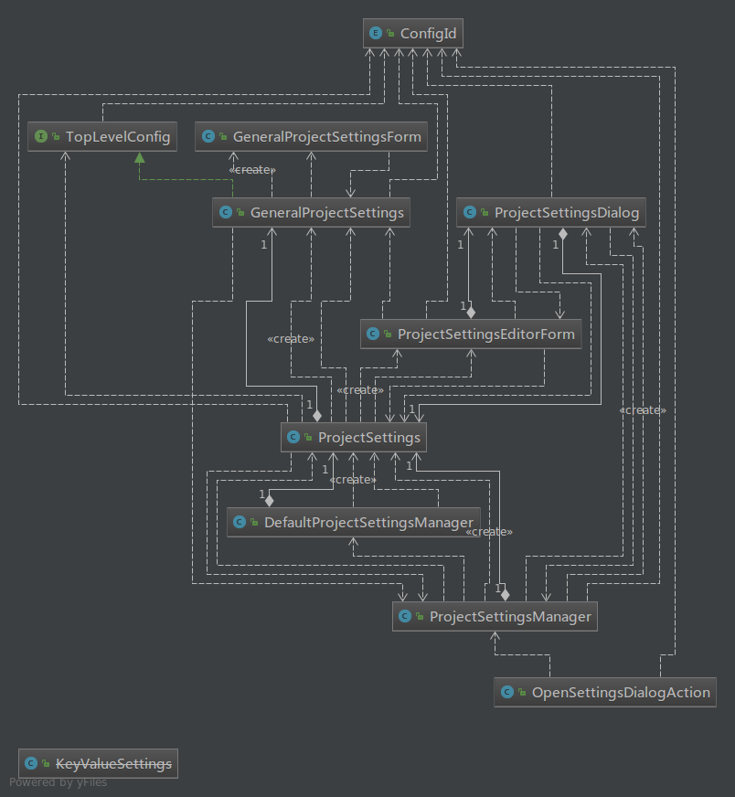

本节具体分析一下插件配置中各个具体的配置项设计和实现，包括HDFS连接配置设置、插件系统一般配置中国际化语言支持和浏览器树展现方式配置。
插件配置起点ProjectSetting
插件的配置项是以Intellij 工程Project为起点，在IDEA启动加载工程后，初始化并读取配置。工程配置设计整体类图：

工程配置设置ProjectSetting和配置管理ProjectSettingManager
ProjectSetting由HDFS配置和插件通用配置组成，继承配置集合泛型类CompositeProjectConfiguration。ProjectSettingManager是配置管理类，负责初始化整个配置，是Project级别的插件组件，当加载工程时初始化该类。当加载工程的时候，在初始化插件组件方法initComponent()中调用importDefaultSettings() 方法，判断当前工程文件是否有该插件工程的配置文件，没有，那就创建默认的配置，配置文件名称：hdfsnavigator.xml重写loadState()方法，读取各个配置项，核心代码如下：
1 | /** |
2 | * 导入新的配置 |
3 | * @param isNewProject |
4 | */ |
5 | public void importDefaultSettings(final boolean isNewProject) |
6 | { |
7 | final Project project = getProject(); |
8 | Boolean settingsLoaded = project.getUserData(FileSystemDataKeys.PROJECT_SETTINGS_LOADED_KEY); |
9 | if ((settingsLoaded == null) || (!settingsLoaded.booleanValue()) || (!isNewProject)) |
10 | { |
11 | String message = LocaleLanguageManager.getInstance().getResourceBundle().getString(LanguageKeyWord.IMPORTDEFAULTSETTINGSASKINFORMATION) + |
12 | project.getName() + "\"?"; |
13 | String strYes=LocaleLanguageManager.getInstance().getResourceBundle().getString(LanguageKeyWord.ASKYES); |
14 | String strNo=LocaleLanguageManager.getInstance().getResourceBundle().getString(LanguageKeyWord.ASKNO); |
15 | MessageUtil.showQuestionDialog(project, LocaleLanguageManager.getInstance().getResourceBundle().getString(LanguageKeyWord.IMPORTDEFAULTSETTINGSASKTITLE), |
16 | message, new String[]{strYes, strNo}, 0, new MessageCallback(Integer.valueOf(0)) |
17 | { |
18 | protected void execute() |
19 | { |
20 | try |
21 | { |
22 | Element element = new Element("state"); |
23 | ProjectSettings defaultProjectSettings = DefaultProjectSettingsManager.getInstance(). |
24 | getDefaultProjectSettings(); |
25 | defaultProjectSettings.writeConfiguration(element); |
26 | ConnectionBundleSettings.IS_IMPORT_EXPORT_ACTION.set(true); |
27 | getProjectSettings().readConfiguration(element); |
28 | |
29 | (EventUtil.notify(project, ConnectionSettingsListener.TOPIC)).connectionsChanged(); |
30 | if (!isNewProject) |
31 | { |
32 | MessageUtil.showInfoDialog(project, "Project Settings", |
33 | "Default project settings loaded to project \"" + project.getName() + "\"."); |
34 | } |
35 | } finally |
36 | { |
37 | ConnectionBundleSettings.IS_IMPORT_EXPORT_ACTION.set(false); |
38 | } |
39 | |
40 | } |
41 | }); |
42 | } |
43 | } |
44 | /** |
45 | * 读取并解析配置 |
46 | * @param element |
47 | */ |
48 | |
49 | public void loadState(Element element) |
50 | { |
51 | projectSettings.readConfiguration(element); |
52 | getProject().putUserData(FileSystemDataKeys.PROJECT_SETTINGS_LOADED_KEY, true); |
53 | } |
HDFS文件系统浏览器通用配置GeneraProjectSetting和UI GeneralProjectSettingsFrom
这里定义了通用配置的UI界面，和操作管理类，具体的设置分为国际化语言配置和树展现方式，由具体的类和UI去实现。GeneraProjectSetting 通用配置管理类，主要获取语言配置和树展现方式配置，核心代码如下：
1 | /** |
2 | * 初始化 |
3 | * @param project |
4 | */ |
5 | public GeneralProjectSettings(Project project) |
6 | { |
7 | super(project); |
8 | //区域语言设置 |
9 | regionalSettings = new RegionalSettings(); |
10 | regionalSettings.setProject(project); |
11 | //HDFS文件系统浏览器树展现方式设置 |
12 | browserSettings = new BrowserSettings(); |
13 | browserSettings.setProject(project); |
14 | } |
15 | /** |
16 | * 获取语言设置配置 |
17 | * @return |
18 | */ |
19 | public RegionalSettings getRegionalSettings() |
20 | { |
21 | return regionalSettings; |
22 | } |
23 | |
24 | /** |
25 | * 获取HDFS浏览器树展现方式配置 |
26 | * @return |
27 | */ |
28 | public BrowserSettings getBrowserSettings() |
29 | { |
30 | return browserSettings; |
31 | } |
32 | /** |
33 | * 创建通用配置编辑UI |
34 | * @return |
35 | */ |
36 | public GeneralProjectSettingsForm createConfigurationEditor() |
37 | { |
38 | return new GeneralProjectSettingsForm(this); |
39 | } |
40 | /** |
41 | * 获取通用配置集合 |
42 | * @return |
43 | */ |
44 | protected Configuration[] createConfigurations() |
45 | { |
46 | return new Configuration[]{regionalSettings,browserSettings}; |
47 | } |
GeneralProjectSettingsForm 通用配置的UI，比较简单，使用两个Panel，保存语言配置和树的展现方式配置。
1 | /** |
2 | * 初始化通用配置UI |
3 | * @param generalSettings |
4 | */ |
5 | public GeneralProjectSettingsForm(GeneralProjectSettings generalSettings) |
6 | { |
7 | super(generalSettings); |
8 | resetFormChanges(); |
9 | registerComponent(mainPanel); |
10 | localeSettingsPanel.add(generalSettings.getRegionalSettings().createComponent(), BorderLayout.CENTER); |
11 | browsersettingPanel.add(generalSettings.getBrowserSettings().createComponent(), BorderLayout.CENTER); |
12 | } |
HDFS连接connection配置
HDFS连接Connection配置设计类图如下：
相关连接配置类讲解
连接配置管理类ConnectionSetting
HDFS连接配置类ConnectionFileSystemSettings
HDFS连接集合配置类ConnectionBundleSettings
ConnectionSettings 是HDFS连接配置的管理类，获取ConnFileSystemSettings 和ConnectionBundleSettings
ConnectionFileSystemSettings抽象类为HDFS连接设置类，包括设置HDFS的Host、端口；MR的Host和端口；HDFS连接的用户等等。
ConnectionBundleSettings抽象类是配置的集合类，增加、删除一个配置等等
ConnectionFileSystemSettings类继承Configuration泛型类，实现了readConfiguration和witreConfiguartion
1 | /** |
2 | * 读取配置并解析 |
3 | * @param element |
4 | */ |
5 | public void readConfiguration(Element element) |
6 | { |
7 | String connectionId = getString(element, "id", null); |
8 | if (connectionId != null) |
9 | { |
10 | parent.setConnectionId(connectionId); |
11 | } |
12 | name = getString(element, "name", name); |
13 | description = getString(element, "description", description); |
14 | fileSystemType = FileSystemType.get(getString(element, "database-type", fileSystemType.getName())); |
15 | databaseVersion = getDouble(element, "database-version", databaseVersion); |
16 | user = getString(element, "user", user); |
17 | if(StringUtil.isEmptyOrSpaces(user)) |
18 | { |
19 | user=System.getProperty("user.name"); |
20 | } |
21 | password = decodePassword(getString(element, "password", password)); |
22 | active = getBoolean(element, "active", active); |
23 | osAuthentication = getBoolean(element, "os-authentication", osAuthentication); |
24 | updateHashCode(); |
25 | } |
26 | /** |
27 | * 将设置的配置项写入XML |
28 | * @param element |
29 | */ |
30 | public void writeConfiguration(Element element) |
31 | { |
32 | setString(element, "name", nvl(name)); |
33 | setString(element, "description", nvl(description)); |
34 | setBoolean(element, "active", active); |
35 | setBoolean(element, "os-authentication", osAuthentication); |
36 | setString(element, "database-type", nvl(fileSystemType == null ? FileSystemType.UNKNOWN.getName() : fileSystemType.getName())); |
37 | setDouble(element, "database-version", databaseVersion); |
38 | setString(element, "user", nvl(user)); |
39 | setString(element, "password", encodePassword(password)); |
40 | } |
ConnectionBundleSettings HDFS 连接集合类，继承ProjectConfiguration泛型类，并且也实现了readConfiguartion 和WriteConfiguration
1 | /** |
2 | * 读取配置并解析 |
3 | * @param element |
4 | */ |
5 | public void readConfiguration(Element element) |
6 | { |
7 | if (IS_IMPORT_EXPORT_ACTION.get()) |
8 | { |
9 | Project project = getProject(); |
10 | List<ConnectionHandler> connectionHandlers = connectionBundle.getAllConnectionHandlers(); |
11 | ConnectionManager.getInstance(project).disposeConnections(connectionHandlers); |
12 | } |
13 | for (Object o : element.getChildren()) |
14 | { |
15 | Element connectionElement = (Element) o; |
16 | String connectionId = connectionElement.getAttributeValue("id"); |
17 | ConnectionHandler connectionHandler = null; |
18 | if (connectionId != null) |
19 | { |
20 | connectionHandler = connectionBundle.getConnection(connectionId); |
21 | } |
22 | if (connectionHandler == null) |
23 | { |
24 | //创建一个ConnectionHandler |
25 | ConnectionSettings connectionSettings = new ConnectionSettings(this); |
26 | connectionSettings.readConfiguration(connectionElement); |
27 | connectionHandler = new ConnectionHandlerImpl(connectionBundle, connectionSettings); |
28 | connectionBundle.addConnection(connectionHandler); |
29 | } else |
30 | { |
31 | ConnectionSettings connectionSettings = connectionHandler.getSettings(); |
32 | connectionSettings.readConfiguration(connectionElement); |
33 | } |
34 | } |
35 | } |
36 | /** |
37 | * 写入配置XML |
38 | * @param element |
39 | */ |
40 | public void writeConfiguration(Element element) |
41 | { |
42 | for (ConnectionHandler connectionHandler : connectionBundle.getConnectionHandlers().getFullList()) |
43 | { |
44 | Element connectionElement = new Element("fsconnection"); |
45 | ConnectionSettings connectionSettings = connectionHandler.getSettings(); |
46 | connectionSettings.writeConfiguration(connectionElement); |
47 | element.addContent(connectionElement); |
48 | } |
49 | } |
界面配置的UI类
配置的UI类主要包括 ConnectionSettingForm、ConnectionBundleSettingsForm、GeneralFileSystemSettingsForm
ConnectionSettingForm HDFS连接配置的主界面UI，使用Tab列表的方式展示需要设置的连接配置
ConnectionBundleSettingsForm 连接集合主界面UI，创建一个连接，就添加到UI集合中显示，可以设置多个HDFS连接
GeneralFileSystemSettingsForm，每个连接的具体设置，包括HDFS的主机地址和端口、MR的地址和端口、访问HDFS的用户名称
这里就不再贴代码了。
国际化多语言和文件浏览器树展现方式设置
国际化多语言设置配置 RegionSettings和RegionalSettingEditorForm
RegionSettings 语言设置管理类，获取设置的当前UI的语言。RegionalSettingEditorForm 语言设置的UI，很简单，界面上只有一个下拉列表，选中UI需要展示的语言。
RegionSettings类的代码如下：
1 | /** |
2 | * 定义国际化语言设置类 |
3 | * Created by fangyuzhong on 17-8-1. |
4 | */ |
5 | public class RegionalSettings extends Configuration<RegionalSettingsEditorForm> |
6 | { |
7 | private Locale locale = Locale.getDefault(); |
8 | private Project project=null; |
9 | public void setProject(Project project) |
10 | { |
11 | this.project = project; |
12 | } |
13 | /** |
14 | * 获取国际化语言配置实例对象 |
15 | * @param project |
16 | * @return |
17 | */ |
18 | public static RegionalSettings getInstance(Project project) |
19 | { |
20 | return GeneralProjectSettings.getInstance(project).getRegionalSettings(); |
21 | } |
22 | /** |
23 | * 应用 |
24 | * @throws ConfigurationException |
25 | */ |
26 | |
27 | public void apply() throws ConfigurationException |
28 | { |
29 | super.apply(); |
30 | |
31 | } |
32 | /** |
33 | * 获取当前配置的语言对象 |
34 | * @return |
35 | */ |
36 | public Locale getLocale() |
37 | { |
38 | return locale; |
39 | } |
40 | /** |
41 | * 设置当前国际化语言 |
42 | * @param locale |
43 | */ |
44 | public void setLocale(Locale locale) |
45 | { |
46 | this.locale = locale; |
47 | } |
48 | /********************************************************* |
49 | * Configuration * |
50 | *********************************************************/ |
51 | /** |
52 | * 实例化国际化设置UI |
53 | * @return |
54 | */ |
55 | public RegionalSettingsEditorForm createConfigurationEditor() |
56 | { |
57 | return new RegionalSettingsEditorForm(this); |
58 | } |
59 | |
60 | public String getConfigElementName() |
61 | { |
62 | return "regional-settings"; |
63 | } |
64 | /** |
65 | * 读取配置，获取当前设置的国际化语言 |
66 | * @param element |
67 | */ |
68 | public void readConfiguration(Element element) |
69 | { |
70 | String localeString = SettingsUtil.getString(element, "locale", Locale.getDefault().toString()); |
71 | boolean useSystemLocale = localeString.equals("SYSTEM_DEFAULT"); |
72 | if (useSystemLocale) |
73 | { |
74 | this.locale = Locale.getDefault(); |
75 | } else |
76 | { |
77 | this.locale = LocaleOption.getLocalOption(localeString).getLocale(); |
78 | } |
79 | LocaleLanguageManager.getInstance().setResourceBundle(locale); |
80 | } |
81 | /** |
82 | * 将当前的国际化配置写入配置文件 |
83 | * @param element |
84 | */ |
85 | public void writeConfiguration(Element element) |
86 | { |
87 | String localLanguage ="SYSTEM_DEFAULT"; |
88 | if(locale!=null) |
89 | { |
90 | localLanguage = locale.getLanguage()+"-"+locale.getCountry(); |
91 | } |
92 | SettingsUtil.setString(element, "locale", localLanguage); |
93 | } |
94 | } |
HDFS文件系统浏览器树的展现方式设置
HDFS文件系统浏览器树有两种展现方式可设置，一是以单棵树多根节点展现多个连接，另一个是以Tab列表方式展现多个连接，两种方式界面比较：


BrowserSettings 树展现方式管理类，获取配置设置的展现方式对象BrowserDisplayMode;BrowserSettingEditorFrom ，设置展示方式的UI。两个类都比较简单，这里就不再说了。